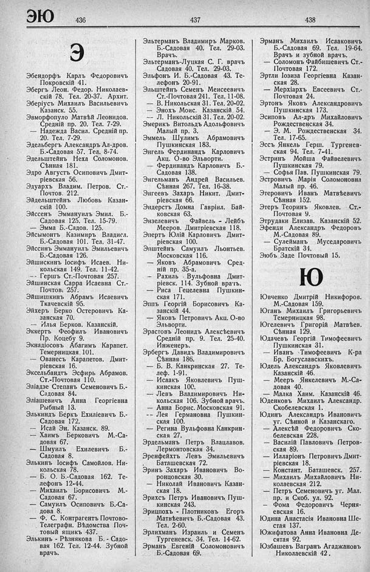

Лист источника 496
Скан

Распознанный текст
ЭЮ 436 437 438
Э
Эбендорфъ Карлъ Федоровичъ
Покровскій 41.
Эбергъ Леон. Федор. Николаев-
скій 78. Тел. 20-37. Архит.
Эберіусъ Михаилъ Васильевичъ
Казанск. 55.
Эвморфопуло Матвѣй Леонидов.
Средній пр. 20. Тел. 7-29.
— Надежда Васил. Средній пр.
20. Тел. 7-29.
Эдельбергъ Александръ Ал-дров.
Б.-Садовая 57. Тел. 8-74.
Эдельштейнъ Неха Соломонов.
Сѣнная 181.
Эдро Августъ Осиповичъ Дмит-
ріевская 56.
Эдуархъ Владим. Петров. Ст.-
Почтов. 212.
Эйдельштейнъ Любовь Казан-
скій 100.
Эйссенъ Эммануилъ Эмил. Б.-
Садовая 125. Тел. 15-79.
— Эмма Б.-Садов. 125.
Эйсымонтъ Казимиръ Владисл.
Б.-Садовая 101. Тел. 31-47.
Эйссинъ Эммануилъ Эмильевичъ
Б.-Садовая 126.
Эйшискинъ Іосифъ Исаев. Ни-
кольская 149. Тел. 11-42.
— Гершъ Ст.-Почтовая 257.
Эйшинская Сарра Исаевна Ст.-
Почтов. 257.
Эйшишкинъ Абрамъ Исаевичъ
Ткачевскій 95.
Эйхеръ Берко Остеровичъ Ка-
занская 70.
— Илья Берков. Казанскій.
Эккертъ Феофилъ Ивановичъ
Пр. Коцебу 9.
Экнадіосовъ Абагимъ Карапет.
Темерницкая 101.
— Ованесъ Карапетов. Дмит-
ріевская 16.
Эксельбандтъ Эсфирь Абрамов.
Ст.-Почтовая 110.
Эліадзе Степанъ Семеновичъ Б.-
Садовая 84.
Эліашевичъ Анна Георгіевна
Рыбный 13.
Элькиндъ Бёркъ Ехиліевичъ Б.-
Садовая 172.
— Исай Эн. Казанск. 89.
— Хаимъ Берковичъ М.-Са-
довая 67.
— Шмуилъ Ехилевичъ Б.-
Садовая 8.
Элькинъ Іосифъ Самойлов. Ни-
кольская 78.
— Б. О. Б.-Садовая 162. Те-
лефонъ 12-44.
— Михаилъ Борисовичъ М.-
Садовая 67.
— Самуилъ Осиповичъ Б.-Са-
дова 8.
— Ф. С. Контрагентъ Почтово-
Телеграфн. Вѣдомства Поч-
товый ящикъ 437.
Элькинъ - Рѣзнякова Б. - Садо-
вая 162. Тел. 12-44. Зубной
врачъ.
Эльтерманъ Владимиръ Марков.
Б.-Садовая 40. Тел. 29-03.
Врачъ.
Эльтерманъ-Луцкая С. Г. врачъ
Садовая 40. Тел. 29-03.
Эльфонъ И. Б.-Садовая 43. Те-
лефонъ 20-91.
Эльштейнъ Семенъ Меисеевичъ
Ст.-Почтовая 241. Тел. 11-08.
— В. Никольская 31. Тел. 20-02.
— Энохъ Моис. Казанскій 54.
— Л. Никольскій 31. Тел. 20-02.
Эмерикъ Витольдъ Адольфовичъ
Малый пр. 3.
Эммель Шулимъ Абрамовичъ
Пушкинская 183.
Энгель Фердинандъ Карловичъ
Акц. О-во Эльворти.
— Фердинандъ Карловичъ Б.-
Садовая 138.
Энгельманъ Андрей Васильев.
Сѣнная 267. Тел. 16-38.
Энгеевъ Захаръ Никит. Дмит-
ріевская 66.
Эндерстъ Домна Гавріил. Бай-
ковская 63.
Энзелевичъ Файвель - Лейбъ
Мееров. Дмитріевская 118.
Эпертъ Юлій Карловичъ Дмит-
ріевская 100.
Эпштейнъ Самуилъ Льонтьев.
Московская 116.
— Яковъ Абрамовичъ Сред-
ній пр. 35-а.
— Рахиль Вульфовна Дмит-
ріевск. 114. Зубной врачъ.
— Риса Гецелевна Пушкин-
ская 171.
Эппъ Георгій Борисовичъ Ка-
занскій 44.
— Яковъ Петровичъ Акц. О-во
Эльворти.
Эрастовъ Леонидъ Алексѣевичъ
Средній пр. 9. Тел. 25-40.
Инженеръ.
Эрбергъ Давидъ Владимировичъ
Сѣнная 186.
— Б. В. Канкринская 27. Те-
леф. 1-91.
— Исаакъ Яковлевичъ Пуш-
кинская 100.
— Левъ Владимировичъ Ни-
кольская 106. Зубной врачъ.
— Анна Борис. Московская 91.
-- Лея Германовна Пушкин-
ская 100.
— Регина Вульфовна Канкрин-
ская 27.
Эрдельманъ Петръ Влацлавов.
Лермонтовская 34.
Эренфейхтъ Левъ Эмильевичъ
Баташевская 72.
Эринъ Захаръ Ивановичъ Во-
ронцовская 30.
— Николай Ивановичъ Казан-
ская 18.
Эрихсъ Петръ Ивановичъ Пуш-
кинская 243.
Эрицпохъ - Плотниковъ Егоръ
Матвѣевичъ Б.-Садовая 43.
Тел. 2-60.
Эрлихманъ Израиль и Семенъ
Тургеневск. 34. Тел. 14-62.
Эрманъ Евгеній Соломоновичъ
Б.-Садовая 69.
Эрманъ Михаилъ Исааковичъ
Б.-Садовая 69. Тел. 19-64.
Врачъ и зубной врачъ.
— Соломонъ Файбишевичъ Ст.-
Почтовая 172.
Эртли Іозиза Георгіевна Казан-
ская 28.
— Мерхіархъ Евсеевичъ Ст.-
Почтовая 24.
Эртонъ Яковъ Александровичъ
Пушкинская 173.
Эсиповъ Ал-дръ Михайловичъ
Рождественская 34.
— Э. М. Рождественская 34.
Тел. 17-65.
Эссъ Янкель Герш. Тургенев-
ская 94. Тел. 7-41.
Эстринъ Мойша Файвелевичъ
Пушкинская 79.
— Софья Пав. Пушкинская 79.
Эстровичъ Марія Соломоновна
Малый пр. 46.
Этеровичъ Иванъ Матвѣевичъ
Сѣнная 152.
Этеръ Теоринъ Яковлев. Ст.-
Почтовая 9.
Этрудаки Елизав. Казанскій 52.
Эфенди Александръ Федоровъ
М.-Садовая 89.
— Сулейманъ Муседаровичъ
Братскій 34.
Эюбъ Заде Почтовый 15.
Ю
Ювченко Дмитрій Никифоров.
М.-Садовая 159.
Юганъ Михаилъ Григорьевичъ
Темерницкая 98.
Югелевичъ Григорій Матвѣев.
Сѣнная 129.
Юдачевъ Георгій Тимофеевичъ
Пушкинская 31.
— Иванъ Тимофеевичъ К-ра
Бр. Богуславскихъ.
Юдель Александръ Яковлевичъ
Казанскій 46.
— Мееръ Янкелевичъ М.-Са-
довая 40.
— Малка Хаим. Казанскій 46.
Юденковъ Михаилъ Александр.
Скобелевская 1.
Юдинъ Александръ Ивановичъ
уг. Сѣнной и Казанскаго.
— Алексѣй Федоровичъ Ско-
белевская 228.
— Василій Павловичъ Петров-
ская 89.
— Илларіонъ Петровичъ Дмит-
ріевская 18.
— Констант. Баташевск. 257.
— Михаилъ Михайловичъ Ни-
колаевская 212.
— Петръ Семеновичъ уг. Мал.
пр. и Скоб. ул. 92.
— Фома Федоровичъ Черня-
евская 16.
Юдина Анастасія Ивановна Ше-
стая 137.
Южифатова Анна Ивановна Де-
сятая 92.
Юзбашевъ Вагранъ Агаджановъ
Николаевскій 42.